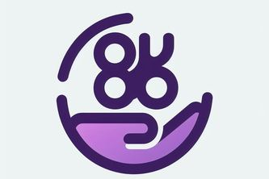

Developed a Python and Flask-based web app that scrapes medical information on diseases like Multiple Myeloma
from clinic websites using BeautifulSoup, storing structured data for chatbot interaction
Integrated the OpenAI GPT-3.5 model to enable users to ask natural language questions about symptoms, treatment
options, and receive guided diagnostic questionnaires based on the scraped medical data
BenefitU

Built a web scraping application in Python to extract compensation and benefits data from Levels.fyi for 1,000+
companies, storing structured results in a MongoDB database for scalable access and querying
Integrated the OpenAI GPT-3.5-turbo model to analyze stored data and power a chatbot capable of answering detailed,
natural language questions about company-specific benefits
AI Voice Agent
Currently in progress..
Plan to build an AI voice agent using LiveKit for real-time voice interaction, integrating web-scraped medical data from trusted clinic sites to provide accurate and structured health information.
Plan to leverage Snowflake Cortex Analysis to process patient medical records and enable the agent to answer diagnostic questions, suggest possible conditions, and guide users through symptom-based decision flows.